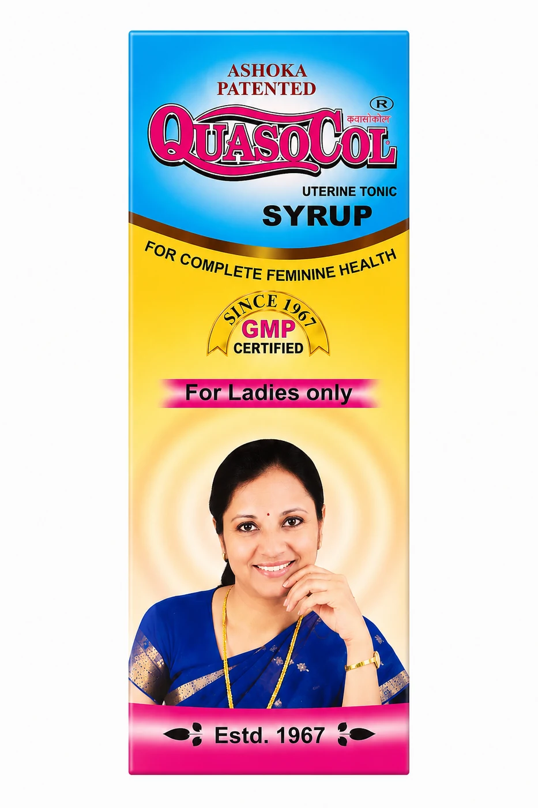

Women's Wellness
QuasoCOL
This proprietary Ayurvedic medicine is a comprehensive herbal formula primarily indicated for addressing menstrual disorders, including painful, irregular, or delayed cycles. Enriched with a potent blend of traditional ingredients such as Ashoka Bark, Kala Jeera, and Arjuna Bark, the syrup is formulated to alleviate physical weakness, anemia, and pelvic pain. Designed for Improved Quality, this health tonic serves as a restorative supplement to support reproductive health and overall vitality.


1.PNG.png.webp)